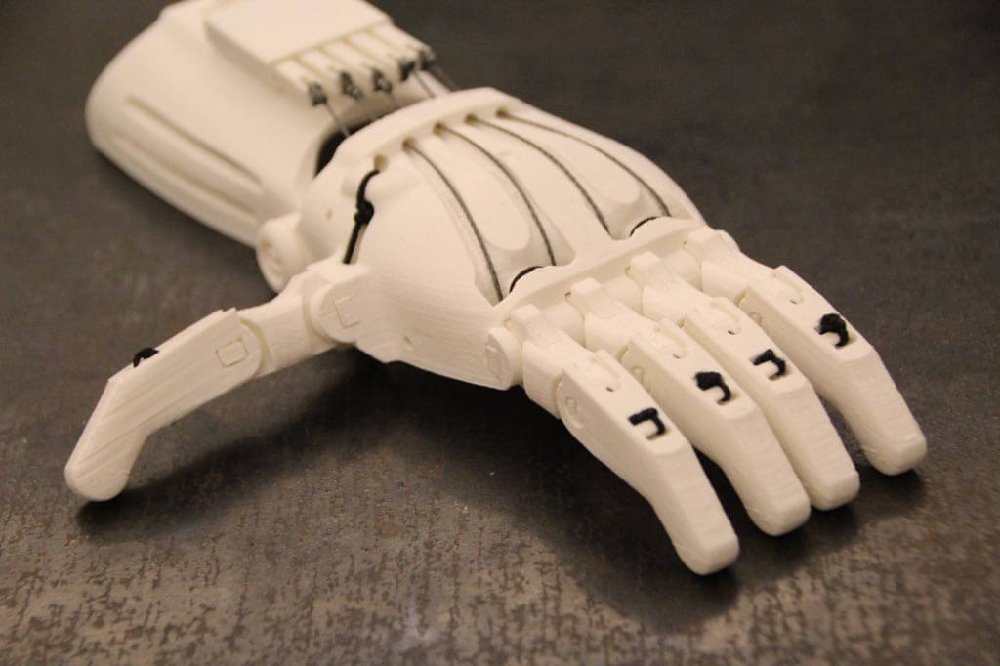

e-Nable Prosthetics
The e-NABLE Community is an amazing group of individuals from all over the world who are using their 3D printers to create free 3D printed hands and arms for those in need of an upper limb assistive device. The e-NABLE Community is made up of teachers, students, engineers, scientists, medical professionals, tinkerers, designers, parents, children, scout troops, artists, philanthropists, dreamers, coders, makers and every day people who just want to make a difference and help to “Give The World A Helping Hand.”
My work with e-Nable involves organizing arm building workshops, teaching students about 3D printing, and raising awareness. We have prepared a video from our first workshop that was shown at the White House for the NCSSS. The arms that my club has made so far have been to Cuba, Vietnam, and to Singapore.